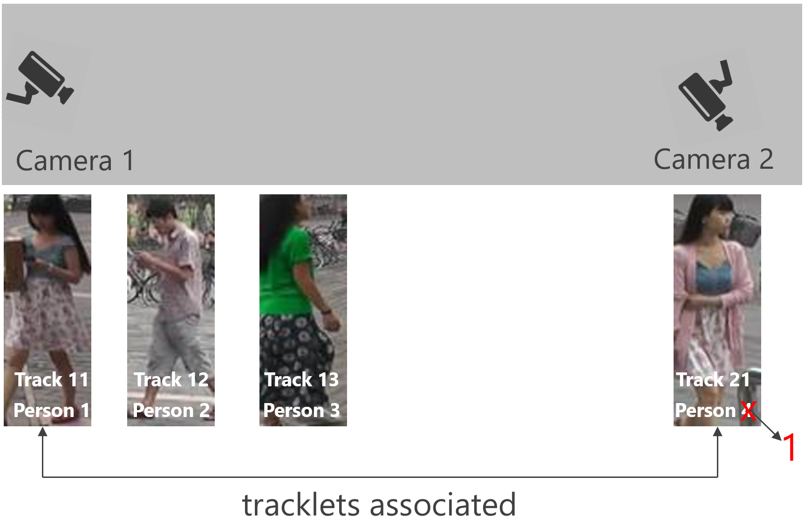

Problem
Person re-identification, a.k.a., multi-camera tracking, is a problem of associating the person images captured from different cameras.

It is also applied to sing camera tracking: handle the occlusion problem, e.g., as shown below:
References
If you use these datasets in your research, please kindly cite our works as:
- [1] [PDF] "Scalable person re-identification: a benchmark", Liang Zheng, Liyue Shen, Lu Tian, Shengjin Wang, Jingdong Wang, Qi Tian, ICCV 2015.
- [2] [PDF] "MARS: A Video Benchmark for Large-Scale Person Re-identification", L. Zheng, Z. Bie, Y. Sun, J. Wang, C. Su, S. Wang, and Q. Tian, ECCV 2016.